1.3.2. Quality assessment of ice sheet surface elevation change data from satellite observations: uncertainty and data completeness for trend assessment in glaciological and hydrological applications#
Data stream: satellite (observations)
Quality area: spatial/temporal data completeness, uncertainty, trend assessment
Application area: glaciological, climatological and/or hydrlogical applications, monitoring and models
Production date: 17-07-2024
Produced by: Yoni Verhaegen and Philippe Huybrechts (Vrije Universiteit Brussel)
🌍 Use case: Monitoring the spatial distribution of Greenland ice sheet surface elevation change rates over the last several decades to be used in the context of the current global warming#
📢 Quality assessment statement#
Surface elevation change detection by radar altimetry is a useful tool to grasp the impact of climate change on the ice sheets. The dataset, however, also has its limitations of which the user should take note before using the product. When using the data, users should be aware of the typical problem areas for radar altimetry-derived surface elevation change (SEC) products. Consulting the accompanying uncertainty measures, for example the precision error and the results of the performed validation procedures with other external independent data, is therefore recommended to assess the error and accuracy characterization of the product.
For the Greenland Ice Sheet (GrIS), the data can be considered highly mature and complete in terms of its spatial and temporal coverage (i.e. data completeness). Moreover, the accompanying gridded error estimates are in line with threshold requirements of the GCOS (2022). The ice sheet surface elevation change products are at this stage found to be highly suitable to derive meaningful and reliable statistical properties such as mean, variability and trends (and hence to deduce climate change signals), as there are almost no spatial/temporal gaps in the data series, the temporal resolution is consistent at monthly-spaced intervals, and the number of consecutive years (the data record length) is sufficient (> 30 years) to filter out interannual variability. The gridded nature of the dataset furthermore allows to monitor climate change on the local (individual pixels), regional (basins) and ice sheet-wide scale. It must be said, however, that the spatial resolution of the gridded data (25 km) is not at its minimum GCOS requirement.
Although corrected for, some limitations of radar-altimetry derived surface elevation change products can still affect the product quality. The most important ones include potential errors due to radar signal penetration variability in firn or snow, and the presence of slope-induced errors over complex terrain (especially around the ice sheet margins). Although the GCOS requirement with respect to the precision errors is met over almost the entire GrIS, some spatial variability can still therefore be noted in the error product. Data quality is found to be slightly lower especially around the margins of the ice sheet, with a higher precision error and a higher degree of filled-up data. For more significant surface lowering rates (lower than ca. -0.5 to -1 m/y), a bias is noted during validation studies with laser altimetry-derived surface elevation changes. SEC values from radar altimeter data hence tend to underestimate surface lowering rates around the marginal areas (and the corresponding volume and mass loss rates for the GrIS).
The conversion of surface elevation to ice sheet volume changes requires corrections for bedrock uplift and firn compaction/densification processes. On the other hand, conversion of volume changes observed via satellite altimetry to mass changes requires knowledge of the density of snow, firn, and ice (depending on the type of material lost or gained).
In the context of the specific use case and question, it can be said that the SEC dataset for the GrIS is of sufficient maturity and quality in terms of its spatio-temporal precision/accuracy and data completeness. The data can hence be considered robust, mature and reliable when used to monitor the spatial distribution of GrIS surface elevation change rates over the last several decades, and to estimate the ice sheet-related altimetric volume changes, its (inter/intra-annual) variability and its temporal trends.
📋 Methodology#
Short description#
Surface elevation change detection by satellites is a useful tool to grasp the impact of climate change on the ice sheets. In that regard, the dataset on the Climate Data Store (CDS) provides monthly surface elevation change (SEC) values and their uncertainty for the Greenland (GrIS) (and also the Antarctic Ice Sheet (AIS)) on a 25 km spatial resolution grid. The core principle involves measuring surface elevations at different times and comparing them to detect changes. In this dataset, they are derived using satellite radar altimetry that contain data from multiple satellite missions, which are grouped together into a consistent time series for each pixel. Surface elevation changes are reported with units of meter per year and are available since 1992 at monthly-spaced intervals. Data are provided in NetCDF format as gridded data and are available for both the GrIS (excluding peripheral glaciers and ice caps) and AIS (including ice shelves). The time for a measurement mentioned in the dataset is the center of a 3-year of 5-year moving window (for the GrIS) and a 5-year moving window (for the AIS) used to derive the SEC values. In this notebook, we use version 4.0.
Structure and (sub)sections#
In this notebook, the applicability of surface elevation change data to be used for the monitoring of the spatial distribution of Greenland Ice Sheet (GrIS) surface elevation change rates over the last several decades will be assessed. We will therefore check whether the data are of sufficient adequacy in terms of its uncertainty (accuracy and precision) and data completeness for this purpose. This will be realized by analyzing the spatial and temporal characteristics of the supplemented gridded errors of the surface elevation change data, by quantifying the amount of missing values in the dataset, by discussing other potential limitations and error sources of the dataset, and by evaluating the implications for the usage of the data in terms of the specific use case and question (i.e. estimating the GrIS surface elevation changes, their (inter/intrayearly) variability and their temporal trends). The structure is as follows:
Data preparation and processing: this section loads packages, defines requests for download from the CDS, downloads the actual data and inspects the data to reveal its structure. Also the functions that are used in this notebook are defined in this section.
Ice sheet surface elevation and volume changes and their uncertainty estimates in space and time: this section analyses the uncertainty term of the surface elevation change product for Greenland and assesses its characteristics in both space and time. The uncertainty is also compared to proposed thresholds by the GCOS Implementation Plan report (GCOS, 2022) and to certain surface characteristics such as the surface slope. We also plot cumulative surface elevation changes and volume changes over time to get an idea over the overall magnitude.
Checking the amount of missing data to inspect data completeness: this section discusses the temporal and geographical coverage of the data in the surface elevation change product. We check the amount of missing data by comparing the amount of pixels with valid data to the land mask that is provided with the dataset.
Spatial distribution of ice sheet surface elevation change (linear and quadratic) trends: this section derives the pixel-by-pixel linear and quadratic (accelerations) surface elevation change trends since 1992 and plots them on a map and as an overall ice sheet-wide time series to discuss its spatial patterns and statistical significance. We also compare these trends to expected changes due to a warming climate.
Implications for deriving reliable values for ice sheet surface elevation and volume change variability and trends: the final section uses all information derived above to assess the suitability of the surface elevation change dataset (with respect to the spatial/temporal coverage (i.e. data completeness), and its precision/accuracy) to estimate ice sheet-related volume changes, its (inter/intra-annual) variability and its temporal trends.
📈 Analysis and results#
⏬ Data preparation and processing#
First we load the packages:
Show code cell source
from matplotlib import colors
import matplotlib.pyplot as plt
import cartopy.crs as ccrs
import cartopy.feature as cfeature
import numpy as np
import xarray as xr
from datetime import datetime
import pandas as pd
import seaborn as sns
import scipy.stats
from c3s_eqc_automatic_quality_control import download
import os
os.environ["CDSAPI_RC"] = os.path.expanduser("~/verhaegen_yoni/.cdsapirc")
plt.style.use("seaborn-v0_8-notebook")
Then we define requests for download from the CDS and download the ice sheet surface elevation change data.
Show code cell source
# Select the domain: "greenland" or "antarctica"
domains = ["greenland"]
collection_id = "satellite-ice-sheet-elevation-change"
# Define the request
request = {
"variable": "all",
"format": "zip",
"climate_data_record_type": "tcdr",
"version": "4_0",
}
# Download the data
datasets = {}
for domain in domains:
print(f"{domain=}")
datasets[domain] = download.download_and_transform(
collection_id,
request | {"domain": domain},
).compute()
domain='greenland'
100%|██████████| 1/1 [00:01<00:00, 1.14s/it]
We can read and inspect the data. Let us print out the data to inspect its structure:
Show code cell source
datasets
{'greenland': <xarray.Dataset> Size: 73MB
Dimensions: (time: 364, y: 123, x: 65)
Coordinates:
* time (time) datetime64[ns] 3kB 1992-01-01 ... 2022-04-01
* x (x) float32 260B -7.393e+05 -7.143e+05 ... 8.607e+05
* y (y) float32 492B -3.478e+06 -3.453e+06 ... -4.281e+05
Data variables: (12/15)
start_time (time) datetime64[ns] 3kB 1991-08-01 ... 2019-02-01
end_time (time) datetime64[ns] 3kB 1996-10-31 ... 2022-07-31
grid_projection |S1 1B b''
lat (y, x) float32 32kB 58.0 58.04 58.09 ... 81.55 81.35 81.14
lon (y, x) float32 32kB -57.0 -56.61 -56.21 ... 17.87 18.55
dh (y, x, time) float32 12MB nan nan nan nan ... nan nan nan
... ...
dhdt_stabil (y, x, time) float32 12MB nan nan nan nan ... nan nan nan
dhdt_ok (y, x, time) int8 3MB 0 0 0 0 0 0 0 0 0 ... 0 0 0 0 0 0 0 0
dist (y, x, time) float32 12MB nan nan nan nan ... nan nan nan
land_mask (y, x) int8 8kB 0 0 0 0 0 0 0 0 0 0 ... 0 0 0 0 0 0 0 0 0 0
high_slope (y, x) int8 8kB 0 0 0 0 0 0 0 0 0 0 ... 0 0 0 0 0 0 0 0 0 0
area (y, x) float32 32kB nan nan nan nan nan ... nan nan nan nan
Attributes: (12/32)
Title: Surface Elevation change of the Greenland ice sheet...
institution: Copernicus Climate Change Service, DTU Space - Div....
reference: Simonsen and Sørensen (2017), Sørensen et al. (2018)
contact: copernicus-support@ecmwf.int
file_creation_date: 2022-10-20 17:33:27.839780
project: C3S_312b_Lot4_ice_sheets_and_shelves
... ...
netCDF_version: NETCDF4
product_version: v4
Conventions: CF-1.7
keywords: EARTH SCIENCE CRYOSPHERE GLACIERS/ICE SHEETS/GLACIE...
license: C3S general license
summary: Surface elevation change rate derived for Greenland...}
The version 4.0 is a gridded dataset at a 25 km spatial resolution containing monthly values of the ice sheet surface elevation change rate \(\frac{dh}{dt}\) (dhdt in m/yr) and its uncertainty (dhdt_uncert in m/yr), as well as the surface elevation change between two measurements \(dh\) (dh in m, and hence not normalized to “per year”) of a grid cell since 1992:
\(\dfrac{dh}{dt} = \dfrac{h_{t_2}-h_{t_1}}{t_{t_2}-t_{t_1}}\), and
\(dh = {h_{t_2}-h_{t_1}}\).
The uncertainties are here reported as precision errors or standard deviations. A land mask (land_mask), slope mask (high_slope), validity flags (dhdt_ok) and the surface area of a grid cell (area) are also included. The time for a measurement mentioned in the dataset is the center of a 3-year or 5-year moving window used to derive the surface elevation change values.
Let us check the total temporal extent of the data:
Show code cell source
time_bds = datasets['greenland']
time_bounds_values = time_bds['time'].values
begin_period = datetime.strptime(str(time_bounds_values[0]).split('T')[0], "%Y-%m-%d")
end_period = datetime.strptime(str(time_bounds_values[-1]).split('T')[0], "%Y-%m-%d")
time_difference = end_period - begin_period
decimal_years = time_difference.days / 365.25
print(f'The begin period of the dataset is {begin_period.date()} and the end period is {end_period.date()}, which is a total of time {decimal_years:.2f} years.')
The begin period of the dataset is 1992-01-01 and the end period is 2022-04-01, which is a total of time 30.25 years.
Let us now perform some data handling and define a plotting function before getting started with the analysis:
Show code cell source
def get_maps(ds, domains):
(sec_name,) = set(ds.data_vars) & {"sec", "dhdt"}
da = ds[sec_name]
da.attrs["long_name"] = "Surface elevation change rate"
if 'greenland' in domains:
da_dh = ds["dh"]
da_dh.attrs["long_name"] = "Surface elevation change"
da_dh_ok = ds["dhdt_ok"]
da_dh_ok.attrs["long_name"] = "Validity of surface elevation change"
da_dist = ds["dist"]
da_dist.attrs["long_name"] = "Distance to measurement"
da_err = ds[f"{sec_name}_uncert"]
da_err.attrs["long_name"] = "Surface elevation change precision error"
(mask_name,) = set(ds.data_vars) & {"land_mask", "surface_type"}
mask = ds[mask_name] > 0
missing = 100 * (da.sizes["time"] - da.notnull().sum("time")) / da.sizes["time"]
missing.attrs = {"long_name": "Missing data", "units": "%"}
year_to_ns = 1.0e9 * 60 * 60 * 24 * 365
coeffs = []
da_cumsum = da.cumsum("time") / 12
for degree, name in enumerate(("linear_trend", "acceleration"), start=1):
coeff = da_cumsum.polyfit("time", degree)["polyfit_coefficients"].sel(
degree=degree, drop=True
)
coeff = degree * coeff * (year_to_ns**degree)
coeff.attrs = {
"units": f"{da.attrs['units'].split('/', 1)[0]} yr$^{{-{degree}}}$",
"long_name": f"{da.attrs['long_name']} {name}".replace("_", " "),
}
coeffs.append(coeff.rename(name))
data_vars = [
da.rename("sec"),
da_err.rename("sec_err"),
mask.rename("mask"),
missing.rename("missing"),
ds["high_slope"],
]
if 'greenland' in domains:
data_vars.append(da_dh.rename("dh"))
data_vars.append(da_dh_ok.rename("dhdt_ok"))
data_vars.append(da_dist.rename("dhdt_distance"))
ds = xr.merge(data_vars + coeffs)
return ds.mean("time", keep_attrs=True)
# Select the specific dataset you want to process, e.g., "greenland"
datasets_original = datasets
selected_ds = datasets["greenland"]
datasets = get_maps(selected_ds, domains)
datasets_get_maps = datasets
# Define plotting function
def plot_maps_single(da, suptitle=None, **kwargs):
kwargs.setdefault("cmap", "RdBu")
# Create subplots with Polar Stereographic projection
fig, ax = plt.subplots(figsize=(10, 6), subplot_kw={'projection': ccrs.Stereographic(central_longitude=-45, central_latitude=90, true_scale_latitude=70)})
# Plot the data
subset_da = da
im = subset_da.plot.imshow(ax=ax, add_colorbar=False, **kwargs)
# Set extent and plot features
ax.set_extent([da.coords['x'].values.min(), da.coords['x'].values.max(), da.coords['y'].values.min(), da.coords['y'].values.max()], ccrs.Stereographic(central_longitude=-45, central_latitude=90, true_scale_latitude=70))
ax.add_feature(cfeature.LAND, edgecolor='black', color='white')
ax.add_feature(cfeature.OCEAN, color='lightblue')
ax.coastlines()
if suptitle:
ax.set_title(suptitle)
ax.gridlines(draw_labels=False, linewidth=0.5, color='gray', alpha=0.5, linestyle='--')
# Add colorbar
cb = fig.colorbar(im, ax=ax, extend='both', shrink=0.49, label=f"{da.attrs['long_name']} [{da.attrs['units']}]")
plt.tight_layout()
plt.show()
Now, our dataset array only holds the most important information, such as the multiyear mean surface elevation change rates (sec) and the arithmetic mean precision error (sec_err). With the function above, we also calculated linear and quadratic trends of surface elevation changes, as well as the amount of missing values.
With everything ready, let us now begin with the analysis:
📉 Greenland Ice Sheet surface elevation and volume changes and their uncertainty estimates in space and time#
We begin by plotting the Greenland multiyear mean surface elevation change rate \(\overline {\frac{dh}{dt}}\) between the beginning and end period with the defined plotting function. The surface elevation change rate at a certain pixel contains signals from various processes:
\(\dfrac{dh}{dt}_{obs} = \dfrac{SMB}{\rho_m} + \dfrac{BMB}{\rho_i} + \dfrac{D'}{\rho_i} + \dfrac{dC}{dt} + \dfrac{dB}{dt}\)
where the first term on the right-hand side (\(SMB\) in units kg m\(^{-2}\) yr\(^{-1}\)) includes elevation changes from surface mass balance processes (i.e. climatically-driven accumulation and runoff), the second one (\(BMB\) in units kg m\(^{-2}\) yr\(^{-1}\)) due to basal mass balance processes at the ice-bedrock interface, the third one (\(D'\) in units kg m\(^{-2}\) yr\(^{-1}\)) due to ice dynamic processes, the fourth one is the vertical velocity due to snow and/or firn compaction (i.e. the transformation and densification of snow towards firn and in a later stage ice), and the last one due to bedrock elevation (\(B\)) changes (i.e. glacial isostatic adjustment). The term \(\rho_m\) is the density of the material lost or gained (snow, firn or ice) and \(\rho_i\) that of ice.
Let us have it plotted:
Show code cell source
# Apply the function to the surface elevation change rate data
da = datasets["sec"]
da.attrs = {
"long_name": r"Mean surface elevation change rate $\overline {\frac{dh}{dt}}$",
"units": "m/yr",
}
# Define dataset to be plotted
suptitle_text = rf"Multiyear mean surface elevation change rate from {begin_period.date()} to {end_period.date()}"
_ = plot_maps_single(
da,
vmin=-0.5,
vmax=0.5,
suptitle=suptitle_text,
)
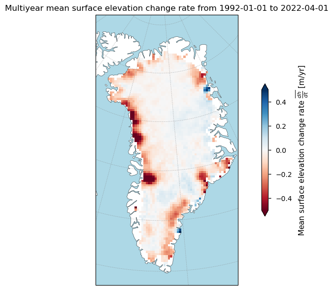
Overall, the map provides a visual representation of the changes of the surface elevation of Greenland’s ice sheet over the last several decades. The red regions, particularly around the margins, indicate areas of significant surface lowering, which is consistent with observations of accelerated glacier flow and ice thinning in these regions (Simonsen and Sørensen 2017; Sørensen et al., 2018). The areas with positive elevation changes (blue) may be influenced by increased snowfall and the consequent thickening of the ice.
Let us quantify the ice sheet-wide average value:
Show code cell source
print(f'The Greenland ice sheet-wide average surface elevation change rate value between {begin_period.date()} and {end_period.date()} is {(np.nanmean(da.values)):.5f} m/yr.')
The Greenland ice sheet-wide average surface elevation change rate value between 1992-01-01 and 2022-04-01 is -0.05007 m/yr.
The negative value indicates that the surface of the ice sheet, in general, has been lowering during the last several decades, resulting in net negative values.
Let us express this as a time series:
Show code cell source
# Define the function
def get_timeseries(ds):
ds["time"].attrs["long_name"] = "Time"
(sec_name,) = set(ds.data_vars) & {"sec", "dhdt"}
da = ds[sec_name]
da.attrs["long_name"] = "Surface elevation change rate"
if 'greenland' in domains:
da_dh = ds["dh"]
da_dh.attrs["long_name"] = "Surface elevation change"
da_dh.attrs["units"] = "m"
da_vol = (da*ds["area"])/1e9
da_vol.attrs["long_name"] = "Volume change rate"
da_vol.attrs["units"] = "km³"
da_err = ds[f"{sec_name}_uncert"]
da_err.attrs["long_name"] = "Surface elevation change rate error"
(mask_name,) = set(ds.data_vars) & {"land_mask", "surface_type"}
mask = ds[mask_name] > 0
missing = 100 * (mask.sum() - da.notnull().sum(("x", "y"))) / mask.sum()
missing.attrs = {"long_name": "Missing data", "units": "%"}
data_vars = [
da.rename("sec"),
da_err.rename("sec_err"),
missing.rename("missing"),
]
if 'greenland' in domains:
data_vars.append(da_dh.rename("dh"))
data_vars.append(da_vol.rename("dvol"))
ds = xr.merge(data_vars)
# Apply mean to all variables except 'dvol', which will use sum
mean_ds = ds.drop_vars('dvol').mean(("x", "y"), keep_attrs=True)
sum_dvol = ds['dvol'].sum(("x", "y"), keep_attrs=True)
# Combine the results
ds = xr.merge([mean_ds, sum_dvol])
return ds
selected_ds = datasets_original["greenland"]
datasets_timeseries = get_timeseries(selected_ds)
# Plot the data
datasets_timeseries["time"].attrs["units"] = "yr"
fig, (ax1, ax2) = plt.subplots(1, 2, figsize=(12, 5))
ax1.plot(datasets_timeseries["time"],datasets_timeseries["sec"],'r')
ax1.grid(color='#95a5a6',linestyle='-',alpha=0.25)
ax1.set_xlim(np.min(datasets_timeseries["time"]),np.max(datasets_timeseries["time"]))
ax1.set_xlabel("Moving window center time (CE)")
ax1.set_ylabel(r"Surface elevation change rate $\frac{dh}{dt}$ (m/yr)")
ax1.set_title("Ice sheet-wide average surface elevation change rate",fontsize=12.5);
ax2.plot(datasets_timeseries["time"],(datasets_timeseries["dh"]),'k')
ax2.grid(color='#95a5a6',linestyle='-',alpha=0.25)
ax2.set_xlim(np.min(datasets_timeseries["time"]),np.max(datasets_timeseries["time"]))
ax2.set_xlabel("Moving window center time (CE)")
ax2.set_ylabel("Cumulative average surface elevation change $\sum \overline{dh}$ (m)")
ax2.set_title("Cumulative ice sheet-wide average surface elevation change",fontsize=12.5);
plt.tight_layout()
plt.show()
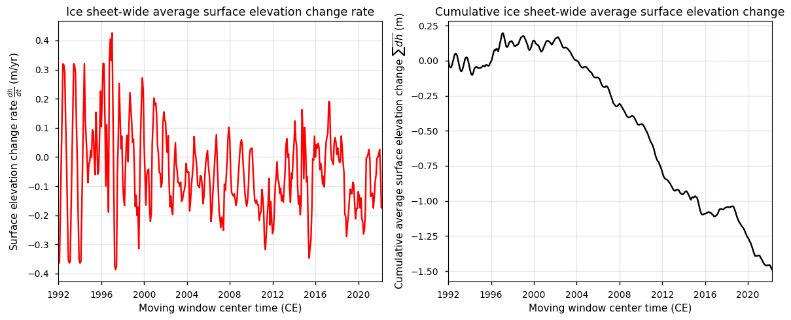
Remember here that the x-axis shows the centered time of a 3-year or 5-year moving window used to derive the surface elevation change values. The figures demonstrate the significant changes in the Greenland Ice Sheet’s surface elevation over the last several decades. The left plot highlights the variability in surface elevation change rates, with recent years showing an almost consistent surface lowering on average. The right plot accumulates these changes, underscoring a clear long-term trend of average ice sheet thinning. This trend is particularly pronounced in the last decade, which aligns with observations of increasing temperatures, dynamic thinning and climate change impacts in the polar regions (e.g. Pritchard et al., 2009; IMBIE Team, 2019; Fox-Kemper et al., 2021).
We can also convert the surface elevation change values to cumulative altimetric volume changes \(V_a\) (with subscript ‘a’ meaning altimetric) by combining the variables dh and area. We therefore have to make the assumption that surface elevation changes due to bedrock uplift and firn compaction rates are unsignificant or known:
\(dV_{a,i} \) [m\(^{3}\)] \( = \sum\limits^{x,y}{dV_{x,y}} = \sum\limits^{x,y}(d{h_{x,y}}*A_{x,y})\)
where \(d{h_{x,y}}\) is the height change between two measurement intervals (from dh, in m) and \(A_{x,y}\) the surface area (from area, in m\(^2\)) of pixel \(x,y\).
We then take the cumulative value over time to get the cumulative altimetric volume change:
\( {V_a} \) [km\(^{3}\)] \( = \sum\limits_{i={1}}^{{{n}}} \left(\dfrac{dV_{a,i}}{1 \cdot 10^9}\right) \)
with \(dV_{a,i}\) the ice sheet-wide altimetric volume change (in m\(^{3}\)) between two measurements (as calculated above) and \(n\) the number of temporal intervals in the time series.
Let us plot this:
Show code cell source
# Given datasets_original is the dataset dictionary
greenland_dataset = datasets_original['greenland']
# Extract the 'dh' and 'area' variables
dh_variable = greenland_dataset['dh']
area_variable = greenland_dataset['area']
# Sum over the x and y dimensions and convert to km^3
dh_summed_time_series = (area_variable*dh_variable).sum(dim=['x', 'y'])/(1e9)
dh_summed_time_series.attrs = {
"long_name": r"Cumulative volume change",
"units": "km³",
}
# Plot the resulting time series
fig, ax = plt.subplots(figsize=(10, 5))
dh_summed_time_series.plot(color='black')
plt.title('Cumulative altimetric volume change of the Greenland Ice Sheet over time')
ax.set_xlim(np.min(datasets_timeseries["time"]),np.max(datasets_timeseries["time"]))
ax.set_xlabel("Moving window center time (CE)")
plt.ylabel('Cumulative altimetric volume change V$_a$ (km$^3$)')
plt.grid(color='#95a5a6',linestyle='-',alpha=0.25)
plt.show()
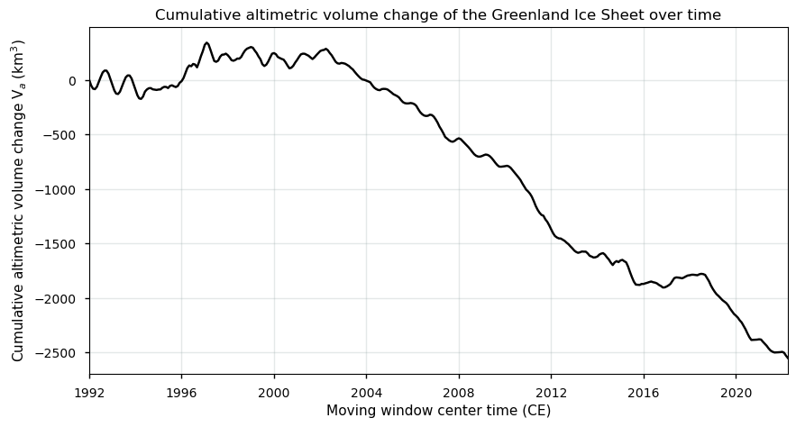
As expected, the plot shows a similar pattern of altimetric volume changes with a clear trend towards volume losses over time, especially during the more recent years. It must be said that these volume changes are not corrected for bedrock uplift and firn densification processes, and thus contain signals from both actual ice sheet volume changes and surface elevation changes related to vertical bedrock motion and firn densification/compaction. Greenland’s bedrock is currently uplifting, due to slow mantle-deformation processes associated with deglaciation at the end of the Last Glacial Period, and fast elastic processes associated with the ongoing ice loss today (Berg et al., 2024). Especially around the margins, where ice loss is currently highest, bedrock uplift rates are in the order of several mm per year. This biases the volume change estimates of the “actual” ice sheet towards an underestimation of the actual volume loss, making the curve above uncompareable to, for example, magnitudes of mass changes from the ice sheet from GRACE(-FO) measurements (which have been corercted for these glacial isostatic adjustment processes). Users should thus keep in mind that also other processes besides surface melt/runoff and accumulation may contribute to surface height change (e.g. basal processes, firn compaction/densification processes and glacial isostatic adjustment are all intertwined in the surface height change data), and hence that surface elevation changes do not necessarily equal ice sheet volume nor mass changes. Modeled corrections for isostatic changes in bedrock elevation depend on the used models, but are generally small (i.e. a few mm/y). Those for near-surface firn density changes are larger (i.e. up to a few cm/y) but also uncertain (e.g. Zwally et al., 2005).
Let us now consider the errors of the data. The total error of a surface elevation change estimate is theoretically given by the sum of the precision (random) and the accuracy (systematic) error:
\( \varepsilon = \sigma + \delta \) where \(\sigma\) is the random error (i.e. standard deviation) and \(\delta\) the systematic error.
In the surface elevation change dataset, precision errors are reported as the standard deviation (i.e. the 68% confidence interval) and the accuracy error is not considered. Therefore, in our case, \(\delta\) = 0, meaning that \(\varepsilon_{\frac{dh}{dt}}\) = \(\sigma_{\frac{dh}{dt}}\).
Let us now explore a bit more the uncertainty of the data. Quantitative pixel-by-pixel error estimates are namely available for the dataset. Let us begin by plotting a histogram of the error values:
Show code cell source
plt.figure(figsize=(10, 6))
error_data = (datasets['sec_err'].values.flatten())
plt.hist(error_data, bins=100, edgecolor='black', alpha=0.7)
plt.title('Histogram of ice sheet surface elevation change rate error estimates (precision errors)')
plt.xlabel(r'Surface elevation change rate error estimate $\varepsilon_{\frac{dh}{dt}}$ (m/yr)')
plt.ylabel('Frequency')
plt.grid(color='#95a5a6',linestyle='-',alpha=0.25)
plt.show()
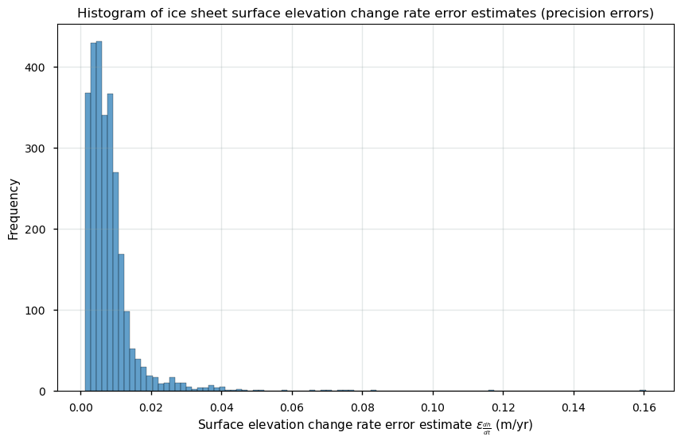
Most errors (standard deviations) seem to be situated between 0 and 0.01 m/yr. To get a better idea, we can also plot the arithmetic mean values over time for each pixel to check their spatial distribution:
Show code cell source
# Apply the function to the surface elevation change rate error data
da = datasets["sec_err"]
da.attrs = {
"long_name": r"Mean surface elevation change rate error $\overline {\epsilon_{\frac{dh}{dt}}}$",
"units": "m/yr",
}
# Plot the data
suptitle_text = rf"Arithmetic mean surface elevation change precision error between {begin_period.date()} and {end_period.date()}"
_ = plot_maps_single(
da,
cmap="Reds",
vmin=0.005,
vmax=0.1,
norm=colors.LogNorm(),
suptitle=suptitle_text,
)
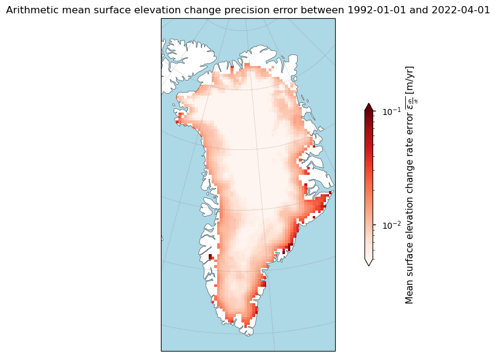
Let us quantify the ice sheet-wide average value:
Show code cell source
print(f'The Greenland ice sheet-wide average surface elevation change rate error (standard deviation) between {begin_period.date()} and {end_period.date()} is {(np.nanmean(da.values)):.3f} m/yr.')
The Greenland ice sheet-wide average surface elevation change rate error (standard deviation) between 1992-01-01 and 2022-04-01 is 0.008 m/yr.
We can accordingly plot the data as a time series:
Show code cell source
fig, ax = plt.subplots()
ax.plot(datasets_timeseries["time"],datasets_timeseries["sec_err"],'r')
ax.grid(color='#95a5a6',linestyle='-',alpha=0.25)
ax.set_xlim(np.min(datasets_timeseries["time"]),np.max(datasets_timeseries["time"]))
ax.set_xlabel("Moving window center time (CE)")
ax.set_ylabel(r"Mean surface elevation change rate error $\overline {\epsilon_{\frac{dh}{dt}}}$ (m/yr)")
ax.set_title("Ice sheet-wide average surface elevation change rate error time series",fontsize=15);
plt.show()
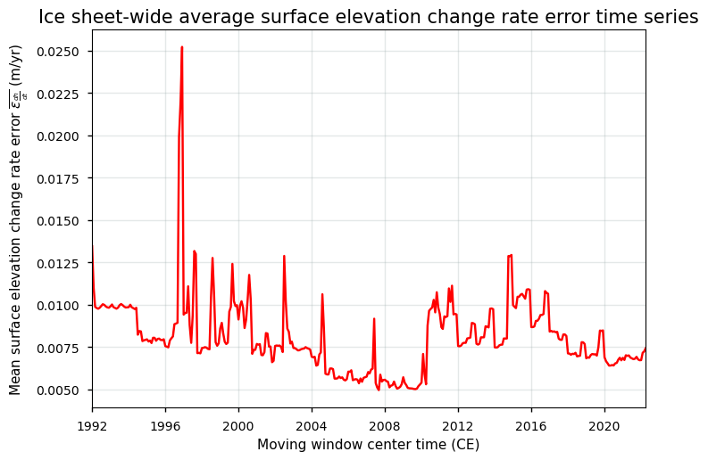
Given that the GCOS (2022) requires a precision error threshold (expressed as 2\(\sigma\)) of at least 0.1 m/yr, it can be stated that this requirement is clearly met for the Greenland Ice Sheet. The uncertainty in surface elevation change rate for the Greenland Ice Sheet arises from two main sources: measurement errors (which include errors due to radar penetration depth into ice, firn or snow, satellite characteristics and location, atmospheric attenuation, etc.) and fitting errors in the surface elevation change modelling. The largest error source is, however, the geolocation of the radar echo, which biases estimates particularly in complex topographies. This is because the surface elevation change estimate results from the highest points within the radar’s footprint during data acquisition. This pattern is clearly shown when plotting the errors against the surface slope classes:
Show code cell source
datasets = {
'high_slope': datasets['high_slope'],
'sec_err': datasets['sec_err'],
'sec': datasets['sec']
}
# Flatten the arrays and remove NaN values for the boxplot
df = pd.DataFrame({
'slopemask_gris': np.ravel(datasets["high_slope"]),
'mean_sec_err_gris': np.ravel(datasets["sec_err"])
}).dropna()
fig, (ax1, ax2) = plt.subplots(1, 2, figsize=(12, 5))
# Boxplot
sns.boxplot(data=df, x='slopemask_gris', y='mean_sec_err_gris', ax=ax1)
ax1.set_ylabel(r'Surface elevation change rate error $\varepsilon_{\frac{dh}{dt}}$ (m/yr)')
ax1.set_xlabel('Slope class')
ax1.set_title("Surface elevation change rate error vs. slope class")
ax1.set_xticks([0, 1, 2])
ax1.set_xticklabels(["Slope < 2°", "2° < Slope < 5°", "Slope > 5°"])
ax1.set_yscale('log')
ax1.grid(color='#95a5a6',linestyle='-',alpha=0.25)
# Scatter plot
sec_err = np.ravel(datasets["sec_err"])
sec = np.ravel(datasets["sec"])
# Remove NaN values for the scatter plot
mask = ~np.isnan(sec_err) & ~np.isnan(sec)
ax2.scatter(abs(sec[mask]), abs(sec_err[mask]), color='blue', s=2)
ax2.set_xlabel(r'Absolute surface elevation change rate $|\frac{dh}{dt}|$ (m/yr)')
ax2.set_ylabel(r'Surface elevation change rate error $\varepsilon_{\frac{dh}{dt}}$ (m/yr)')
ax2.set_title("Surface elevation change rate error vs. surface elevation change rate magnitude")
ax2.set_yscale('log')
ax2.set_xscale('log')
ax2.grid(color='#95a5a6',linestyle='-',alpha=0.25)
plt.tight_layout()
plt.show()
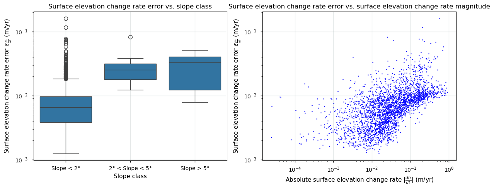
In general, radar altimeters used to derive surface elevation changes perform more accurately in the central, flat regions of the Greenland ice sheet, which have a simpler topography and a more stable surface, compared to the coastal areas with a more complex terrain (with steep slopes, valleys and ridges and large seasonal cycles of melt and accumulation). As a result, precision errors tend to be larger around the margins of the ice sheets. The standard deviation is also shown to clearly increase with an increasing magnitude of the surface elevation change rate itself. This may be, amongst others, related to rapid and extensive changes of the surface characteristics (e.g. variations in radar penetration depth due to extensive melting, or else by a steepening of the surface slope), hence complicating proper comparison of the surface elevation between different acquisition times.
Radar altimeters, in contrast to laser altimeters, provide, for example, measurements in all weather conditions, but on the other hand have a much larger footprint during data acquisition (the term “footprint” in the context of satellite and Earth observation refers to the specific area on the Earth’s surface that is covered by the signals transmitted from a satellite in space), which results in a lower precision of the measurements. This especially provides difficulties around the margins, where complex and high-slope terrain prevails. The radar signal can furthermore penetrate into the snowpack until a certain depth, depending on the properties of the snow layers and the frequency of the sensor. Snow melting allows, for example, for variable snowpack penetration depths of the radar pulse (e.g. due to a changing liquid water content or refrozen ice lenses), hence possibly introducing artificial elevation changes (i.e. for example when the radar pulse is reflected from liquid water within the snowpack).
Let us now quantify the amount of pixels that do not meet the GCOS precision error requirement of 0.1 m/yr. We therefore multiply the errors accompanying the data by 2 to get a precision error in the form of 2 standard deviations (as proposed by the GCOS):
Show code cell source
ds = datasets_original['greenland']
dhdt_uncert = ds['dhdt_uncert']
num_pixels_below_threshold = (2*dhdt_uncert < 0.1).sum().item()
total_pixels = dhdt_uncert.count().item()
percentage_below_threshold = (num_pixels_below_threshold / total_pixels) * 100
print(f"The absolute number of pixels with a surface elevation change rate precision error (2σ) < 0.1 m/yr is {num_pixels_below_threshold} pixels or {percentage_below_threshold:.2f}%.")
The absolute number of pixels with a surface elevation change rate precision error (2σ) < 0.1 m/yr is 987436 pixels or 99.40%.
Let us have this plotted:
Show code cell source
# Apply the function to the surface elevation change error data
ds = datasets_original['greenland']
dhdt_uncert = ds['dhdt_uncert']
below_threshold = (dhdt_uncert < 0.1).sum(dim='time')
total_observations = dhdt_uncert.notnull().sum(dim='time')
percentage_below_threshold = (below_threshold / total_observations) * 100
percentage_below_threshold = percentage_below_threshold.where(total_observations > 0)
da = percentage_below_threshold
da.attrs = {
"long_name": r"Percentage of measurements in time series",
"units": "%",
}
# Define bounds and colormap
suptitle_text = rf"Percentage of data in time series that meet the GCOS precision error requirement"
_ = plot_maps_single(
da,
cmap="RdYlGn",
vmin=82,
vmax=99,
suptitle=suptitle_text,
)
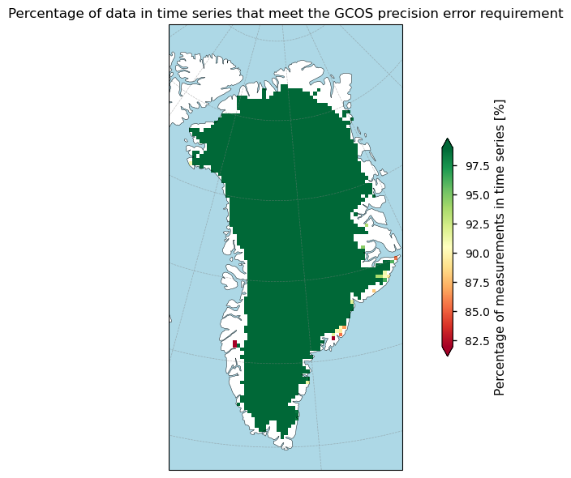
Apart from some pixels near the margins, the GCOS precision error requirement is thus met over almost the entire ice sheet, ensuring a high-quality dataset in terms of the error.
Let us combine this information and propagate the error throughout the time series of the cumulative volume change of the ice sheet, assuming uncorrelated errors in space and time:
\( \sigma_{d{V_i}} \) [m\(^3\)] \(= \sqrt{\sum\limits^{x,y}\left({A_{x,y} \cdot \sigma_{d{h_{x,y}}}}\right)^2} \)
where \(\sigma_{\Delta{h_{x,y}}}\) is the surface elevation change standard deviation (from dh_uncert in m) and \(A_{x,y}\) the grid cell area (from area in m\(^2\)) at pixel \(x,y\) between two measurements, and
\( \sigma_{V} \) [km\(^3\)] \( = \dfrac{1}{1 \cdot 10^9} \sqrt {\sum\limits_{i={1}}^{{{n}}} (\sigma_{d{V_i}})^2} \)
where \(\sigma_{d{V_i}}\) is the volume change error between two measurements as calculated above and \(n\) the number of temporal intervals in the time series.
Let us have this plotted:
Show code cell source
# Calculate the propagated uncertainty for each grid cell
propagated_uncertainty = (selected_ds['area'] * selected_ds['dh_uncert'])**2
# Sum these uncertainties over the x and y dimensions
summed_uncertainty = propagated_uncertainty.sum(dim=('x', 'y'))
# Take the square root of the summed uncertainties to get the total propagated uncertainty
total_uncertainty = np.sqrt(summed_uncertainty)
# Convert to a data array for better representation
total_uncertainty_da = xr.DataArray(total_uncertainty, dims=['time'], coords={'time': selected_ds['time']}, name='total_volume_uncertainty')
# Propagate through time
squared_uncertainties = total_uncertainty_da ** 2
cumulative_squared_uncertainties = squared_uncertainties.cumsum(dim='time')
cumulative_uncertainty = np.sqrt(cumulative_squared_uncertainties)/1e9
# Plot the cumulative uncertainty
fig, ax1 = plt.subplots(figsize=(12, 5))
line1 = dh_summed_time_series
error1 = cumulative_uncertainty
ax1.fill_between(line1["time"], line1 - error1, line1 + error1, alpha=0.5)
line1.plot(ax=ax1, color="k")
ax1.grid(color='#95a5a6',linestyle='-',alpha=0.25)
ax1.set_xlim(np.min(datasets_timeseries["time"]),np.max(datasets_timeseries["time"]))
ax1.set_xlabel("Moving window center time (CE)")
ax1.set_ylabel("Cumulative ice sheet volume change $V$ (km$^3$)")
ax1.set_title(f"Cumulative ice sheet altimetric volume change and its uncertainty since {begin_period.date()}", fontsize=14.5);
plt.tight_layout()
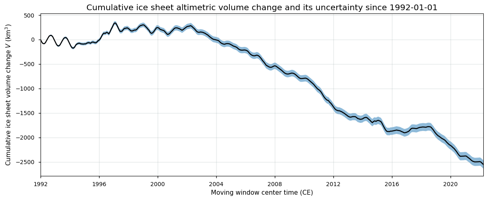
When expressed in actual values, this becomes:
Show code cell source
print(f'The total Greenland ice sheet-wide altimetric volume change between {begin_period.date()} and {end_period.date()} is {(dh_summed_time_series[-1]):.2f} ± {(cumulative_uncertainty[-1]):.2f} km³.')
The total Greenland ice sheet-wide altimetric volume change between 1992-01-01 and 2022-04-01 is -2550.52 ± 84.52 km³.
Note that due to potential spatial and temporal correlation, the error in the above estimate (assuming independent errors) might be underestimated.
As stated before, accuracy errors are not included in the total error estimate of the Greenland surface elevation change dataset. To get an estimate of the accuracy, the ECMWF Confluence Wiki can be consulted, as it provides a summary of a validation procedure with independent external data. This procedure involved comparisons with data from NASA’s Operation IceBridge (OIB) (Studinger, 2014) and ICESat-2 ATL15 (Smith et al., 2021). The validation outcomes mentioned on the ECMWF Concluence Wiki demonstrated good agreement with minimal differences. Key results include:
Comparisons with OIB data showed a mean bias of all observations of ca. 0.02 m/yr.
Validation against ICESat-2 data showed median differences in the order of 0.02-0.06 m/yr.
However, for more significant surface lowering rates (lower than ca. -0.5 to -1 m/yr), there seems to be a bias towards an underestimation of lowering rates by the radar altimetry when compared to the laser altimeters. In that sense, the dataset on the Climate Data Store (CDS) seems to underestimate overall surface lowering rates, which is presumably related to, amongst others, the larger footprint for radar data acquisition (i.e. radar altimetry measures only data from the highest point in the footprint) and differences in scattering horizons (i.e. radar signals tend to penetrate into the snow/firn layers and hence reflect from subsurface layers rather than the actual surface layer) for both data acquisition methods (e.g. Simonsen and Sørensen, 2017; Krieger et al., 2020). These results indicate that the dataset aligns well with external independent data, though some important accuracy errors and biases arise from the source data characteristics, different modes of data acquisition, varying external factors during data acquisition, different algorithm applications and settings, and post-processing procedures.
Let us now check the amount of missing data in the dataset (i.e. data completeness).
✅ Checking the amount of missing data to inspect data completeness#
In this subsection, we focus on inspecting the data completeness of the Greenland surface elevation change dataset. By quantifying the amount of missing data, we can assess the robustness of the dataset and identify potential gaps that may need to be addressed in further analyses. Ensuring data completeness is crucial for accurate analysis and interpretation of surface elevation changes over time. In the dataset, this can be assessed comparing the amount of pixels with valid data to the land mask (land_mask), where pixels with a value of 1 represent ice-covered grid points of the main ice sheet body.
We begin by quantifying the total ice-covered area that involves the land_mask variable by combining it with the given pixel surface area area:
Show code cell source
# Get area_variable and land_mask
land_mask = greenland_dataset['land_mask'].values
area_variable = greenland_dataset['area'].values
# Create a mask where land_mask equals 1
mask = land_mask == 1
# Apply the mask to area_variable and sum the values
total_ice_covered_area_km2 = np.nansum(area_variable[mask]) / 1e6
# Print the result
print(f"The total ice-covered area over the Greenland Ice Sheet in the dataset is {total_ice_covered_area_km2:.2f} km².")
The total ice-covered area over the Greenland Ice Sheet in the dataset is 1726797.19 km².
Let us now plot the amount of missing data within the ice-covered mask as a time series:
Show code cell source
fig, ax = plt.subplots()
ax.plot(datasets_timeseries["time"],datasets_timeseries["missing"],'r')
ax.grid(color='#95a5a6',linestyle='-',alpha=0.25)
ax.set_xlim(np.min(datasets_timeseries["time"]),np.max(datasets_timeseries["time"]))
ax.set_xlabel("Moving window center time (CE)")
ax.set_ylabel("Percentage missing data (%)")
ax.set_title("Time series of percentage missing data of the surface elevation change rates",fontsize=15);
plt.show()
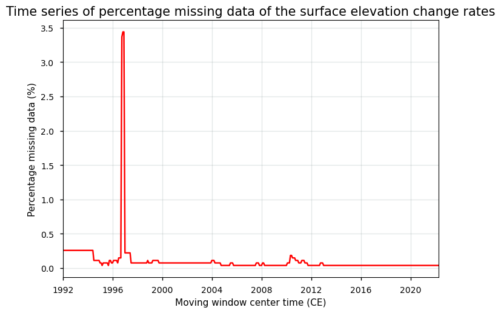
For the GrIS, most spatial data gaps have been filled by interpolation and the spatial coverage extends approximately over the entire ice sheet. The data and the pixels in the land mask, however, do not include peripheral glaciers and ice caps. In summary, the figure highlights a notable data gap around 1997, but otherwise indicates a stable and low percentage of missing data for the surface elevation change rates of the GrIS over the last several decades. This overall indicates that the data is complete in terms of its spatial and temporal coverage, which ensures a high-quality dataset that is crucial for accurate and reliable analysis of surface elevation changes over time.
Let us have the spatial distribution plotted:
Show code cell source
# Apply the function to the surface elevation change error data
da = xr.where(datasets_get_maps["sec"].isnull(), np.nan, 100-datasets_get_maps["missing"])
da.attrs = {
"long_name": r"Percentage of measurements in time series",
"units": "%",
}
# Plot the data
suptitle_text = rf"Percentage of non-NaN data in the surface elevation change rate time series"
_ = plot_maps_single(
da,
cmap="RdYlGn",
vmin=82,
vmax=99,
suptitle=suptitle_text,
)
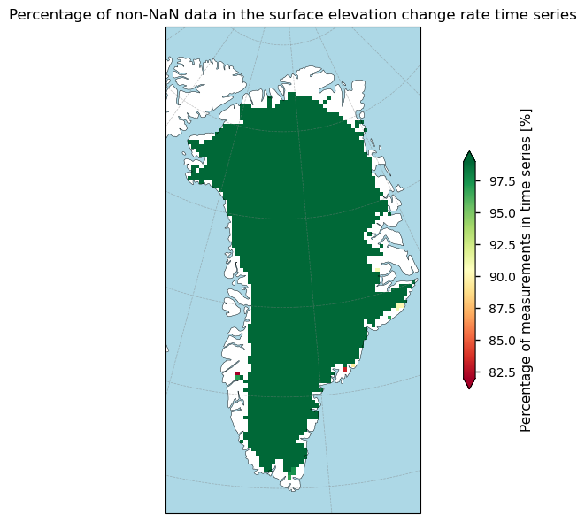
Most pixels of the Greenland Ice Sheet exhibit a complete time series of data, indicating a comprehensive and reliable dataset for most areas. Some coastal regions show slightly lower percentages of data (shading towards yellow and red in the color scheme), suggesting the presence of few data gaps or missing data in these regions.
Since most data gaps have been filled up, we can use the variable dist in the original data to check the distance to to the nearest observational node (in m). The larger the average distance over time, the higher the chance that (part of the time series of) pixels in these locations have been filled up by interpolation:
Show code cell source
# Apply the function to the surface elevation change distance data
da = datasets_get_maps["dhdt_distance"]
da.attrs = {
"long_name": r"Distance to nearest valid measurement",
"units": "m",
}
# Plot the data
suptitle_text = rf"Mean distance to nearest valid surface elevation change measurement"
_ = plot_maps_single(
da,
cmap="RdYlGn_r",
vmin=100,
vmax=15000,
suptitle=suptitle_text,
)
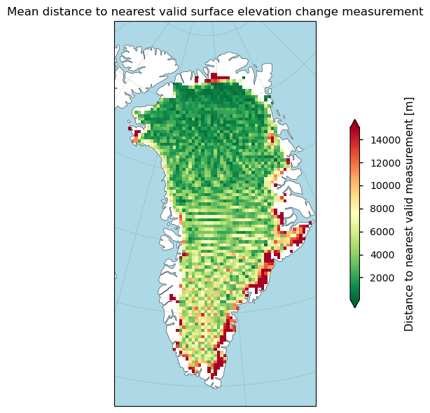
Let us again express this in terms of the surface slope classes:
Show code cell source
datasets = {
'high_slope': datasets_get_maps['high_slope'],
'dhdt_distance': datasets_get_maps['dhdt_distance'],
'sec': datasets_get_maps['sec'],
}
# Flatten the arrays and remove NaN values for the boxplot
df = pd.DataFrame({
'slopemask_gris': np.ravel(datasets["high_slope"]),
'dhdt_distance_gris': np.ravel(datasets["dhdt_distance"])
}).dropna()
fig, (ax1, ax2) = plt.subplots(1, 2, figsize=(12, 5))
# Boxplot
sns.boxplot(data=df, x='slopemask_gris', y='dhdt_distance_gris', ax=ax1)
ax1.set_ylabel(r'Mean distance to nearest valid measurement (m)')
ax1.set_xlabel('Slope class')
ax1.set_title("Mean distance to nearest valid measurement vs. slope class")
ax1.set_xticks([0, 1, 2])
ax1.set_xticklabels(["Slope < 2°", "2° < Slope < 5°", "Slope > 5°"])
ax1.grid(color='#95a5a6',linestyle='-',alpha=0.25)
# Scatter plot
sec_err = np.ravel(datasets["dhdt_distance"])
sec = np.ravel(datasets["sec"])
# Remove NaN values for the scatter plot
mask = ~np.isnan(sec_err) & ~np.isnan(sec)
ax2.scatter(abs(sec[mask]), abs(sec_err[mask]), color='blue', s=2)
ax2.set_xlabel(r'Absolute surface elevation change rate $|\frac{dh}{dt}|$ (m/yr)')
ax2.set_ylabel(r'Mean distance to nearest valid measurement (m)')
ax2.set_title("Mean distance to nearest valid measurement vs. SEC rate magnitude")
ax2.set_xscale('log')
ax2.grid(color='#95a5a6',linestyle='-',alpha=0.25)
plt.tight_layout()
plt.show()
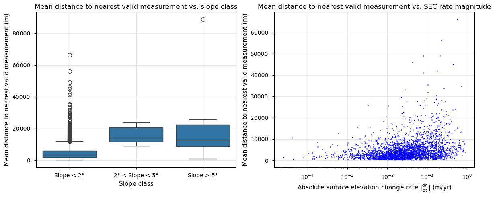
Again, the same pattern is noted: pixels near the margin (where high-slope terrain prevails) have a larger probability of having been filled up by interpolation. We also note that values above a latitude of 81.5°N have been filled up, which is the northernmost location of the main ice sheet body, due to the “polar gap” of the ERS-1, ERS-2, and Envisat satellite missions. Early satellite missions like ERS-1, ERS-2, and Envisat namely had coverage limitations over higher latitudes (north of 81.5°N).
With all the information above, let us now go on and calculate linear and quadratic trends for the ice sheet surface elevation change product.
❄️ Spatial distribution of ice sheet surface elevation change (linear and quadratic) trends#
In this subsection, we explore the spatial distribution of surface elevation change rate trends across the Greenland Ice Sheet. By examining both linear and quadratic trends, a comprehensive understanding of how the ice sheet’s surface elevation has evolved over time can be assessed. The linear trends highlight the overall direction and magnitude of elevation changes, while the quadratic trends reveal any acceleration or deceleration in these changes. Let us start by exploring the linear trends:
Show code cell source
# Apply the function to the surface elevation change linear trends
da = xr.where(datasets_get_maps["sec"].isnull(), np.nan, datasets_get_maps["linear_trend"])
da.attrs = {
"long_name": r"Surface elevation change rate trend",
"units": "m/yr",
}
# Plot the data
suptitle_text = rf"Linear trend of the surface elevation change rates between {begin_period.date()} and {end_period.date()}"
_ = plot_maps_single(
da,
vmin=-0.5,
vmax=0.5,
suptitle=suptitle_text,
)
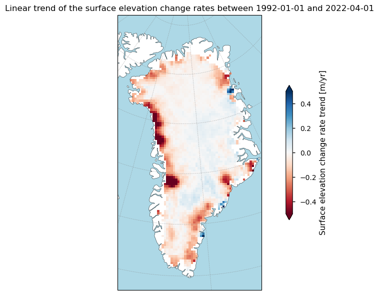
The maps shows a similar pattern as the multiyear mean surface elevation change rates. Hence, it reveals significant surface elevation decreases especially along the western coast of Greenland, suggesting a substantial surface lowering in these regions. In contrast, the eastern coast shows mixed trends, with localized areas of both increase and decrease in surface elevation. The central regions of Greenland mostly exhibit neutral or slightly positive trends, indicating stable or slightly increasing surface elevation. The observed patterns highlight regional variability in surface elevation change trends, with coastal areas experiencing more substantial changes compared to interior regions. The data align with expected climate change impacts, where warming temperatures lead to increased melting and surface lowering, particularly in the low-elevation coastal areas (Simonsen and Sørensen 2017; Sørensen et al., 2018).
Let us now consider quadratic trends (accelerations):
Show code cell source
# Apply the function to the surface elevation change quadratic trends
da = xr.where(datasets_get_maps["sec"].isnull(), np.nan, datasets_get_maps["acceleration"])
da.attrs = {
"long_name": r"Surface elevation change rate acceleration",
"units": "m yr$^{-2}$",
}
# Plot the data
suptitle_text = rf"Quadratic trend of the surface elevation change rates between {begin_period.date()} and {end_period.date()}"
_ = plot_maps_single(
da,
vmin=-0.05,
vmax=0.05,
suptitle=suptitle_text,
)
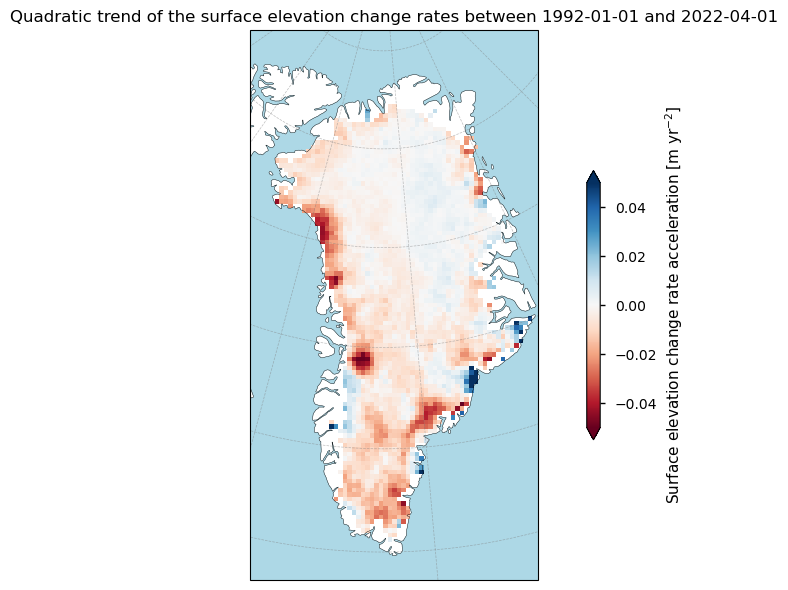
Again, the observed patterns highlight a clear regional variability in the acceleration and deceleration of surface elevation change rates. Coastal areas show more substantial changes in the acceleration of elevation change rates compared to central regions, which tend to be more stable.
Let us now quantify the ice sheet-wide surface elevation change and volume change trends:
Show code cell source
def plot_trends(datasets, varname):
year_to_ns = 1.0e9 * 60 * 60 * 24 * 365
fig, axs = plt.subplots(len(datasets), 1, layout="constrained", squeeze=False)
for ax, (region, ds) in zip(axs.flatten(), datasets.items()):
ds["time"].attrs["units"] = "CE"
ds["time"].attrs["long_name"] = "Moving window center time"
with xr.set_options(keep_attrs=True):
da = ds[varname].cumsum("time") / 12
da.attrs["units"] = da.attrs["units"].split("/", 1)[0]
for label, degree, color in zip(
(
"Linear trend",
"Quadratic trend",
),
(1, 2),
('blue', 'red'), # Specify colors for each trend
):
# Compute coefficients
coeffs = da.polyfit("time", degree)["polyfit_coefficients"]
# Plot trends and print stats
equation = []
for deg, coeff in coeffs.groupby("degree"):
coeff = coeff.squeeze() * (year_to_ns**deg)
if deg == degree:
if deg == 1:
quantity = "slope"
units = f"{da.attrs['units']}/yr"
elif deg == 2:
quantity = "acceleration"
units = f"{da.attrs['units']}/yr^2"
else:
raise ValueError(f"{deg=}")
print(
f"The {quantity} of the ice sheet {da.attrs['long_name'].lower()} "
f"is {degree*coeff:.3f} {units}."
)
if deg == 1:
_, p_value = scipy.stats.kendalltau(da["time"], da)
s_lev = 0.05
is_significant = p_value < s_lev
print(
" ".join(
[
"The trend",
"is significant"
if is_significant
else "is not significant",
f"at an alpha level of {s_lev}, i.e. a monotonic linear trend",
"is present."
if is_significant
else "is not present.",
]
)
)
equation.append(
f"{float(coeff):+.3f}{'x' if deg else ''}{f'$^{deg}$' if deg>1 else ''}"
)
label = f"{label}: {' '.join(equation[::-1])}"
fit = xr.polyval(da["time"], coeffs)
fit.plot(label=label, ax=ax, color=color)
da.plot(label="Actual data", ax=ax, color='black')
ax.set_xlim(np.min(da["time"]),np.max(da["time"]))
ax.set_title(f"{ds[varname].attrs['long_name']} of the Greenland Ice Sheet and its trends")
ax.grid(color='#95a5a6',linestyle='-',alpha=0.25)
ax.legend()
return fig, axs
datasets_timeseries_trends = datasets_timeseries.drop_vars([var for var in datasets_timeseries.data_vars if var != 'sec'])
datasets_timeseries_trends["sec"].attrs = {
"long_name": r"Cumulative average surface elevation change",
"units": "m",
}
datasets_timeseries_trends = datasets_timeseries_trends.assign(dh_summed=datasets_timeseries["dvol"])
datasets_timeseries_trends["dh_summed"].attrs = {
"long_name": r"Cumulative altimetric volume change",
"units": "km³",
}
fig, axs = plot_trends(datasets_timeseries_trends, ~np.isnan(datasets_timeseries_trends["sec"]))
The slope of the ice sheet cumulative average surface elevation change is -0.056 m/yr.
The trend is significant at an alpha level of 0.05, i.e. a monotonic linear trend is present.
The acceleration of the ice sheet cumulative average surface elevation change is -0.005 m/yr^2.
The slope of the ice sheet cumulative altimetric volume change is -95.628 km³/yr.
The trend is significant at an alpha level of 0.05, i.e. a monotonic linear trend is present.
The acceleration of the ice sheet cumulative altimetric volume change is -7.857 km³/yr^2.
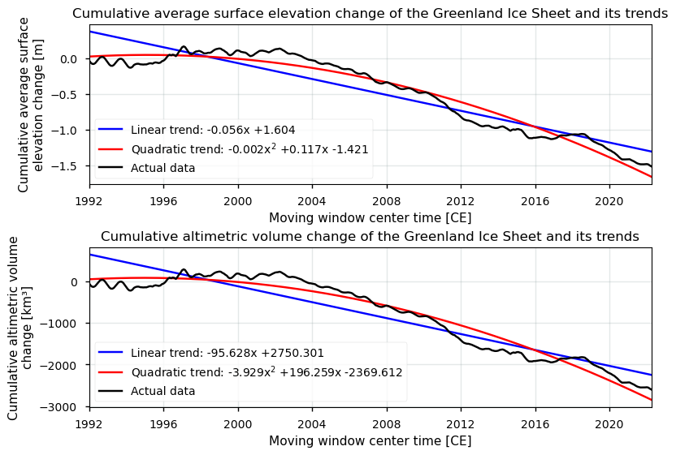
As seen earlier, the significant negative and downward trend, for both the linear and quadratic trend, implies that the surface is generally lowering over the Greenland Ice Sheet, and that this lowering has been accelerating over the past several decades. Although surface elevation changes are not solely impacted by surface mass balance processes, the observed trends are consistent with the expected impacts of climate change, where rising global temperatures result in increased surface lowering.
📌 Implications for deriving reliable values for ice sheet surface elevation and volume change variability and trends#
When measured over an extended period and over the complete ice sheet, trends in Greenland Ice Sheet surface elevation changes can serve as a clear indicator of global climate change. To ensure these trends are accurate, representative, and reliable, the dataset should exhibit sufficient precision, accuracy and spatial/temporal completeness.
From the analysis above, it can be stated that dataset for the Greenland Ice Sheet (GrIS) meets the above-mentioned criteria well. It spans more than 30 years, providing a robust temporal extent that aligns with the Intergovernmental Panel on Climate Change (IPCC) standard for climate normals and trend analysis. This extended period ensures that the analysis captures meaningful changes rather than short-term fluctuations. Although the dataset’s spatial resolution of 25 km is not in line with minimal thresholds proposed by the GCOS (2022), it is sufficiently adequate to capture local, regional and ice sheet-wide variations in surface elevation change and altimetric volume change rates. The monthly temporal resolution furthermore allows for detailed temporal analysis, which is critical for identifying both monthly/seasonal patterns and longer-term trends. Apart from that, the comprehensive spatial and temporal coverage of the dataset is another significant strength. With almost no spatially or temporally missing data (as most data gaps have been filled up), the dataset provides a continuous and complete record of surface elevation changes across the Greenland Ice Sheet since 1992. This completeness is crucial for ensuring that trends are not biased by data gaps and that the analysis can provide a consistent and comprehensive view of the ice sheet’s behavior over time.
Data have also been corrected for various processes related to the data acquisition, surface conditions and processing, resulting in uncertainties. It is essential to note that the error in the data, as well as the percentage of filled-up data by interpolation, tends to be higher at the margins of the ice sheet. These marginal areas are often characterized by more complex terrain, variable surface characteristics and dynamic ice flow patterns, which can lead to greater measurement uncertainties. For example, in these areas there is an increased risk of slope errors, and snow melting allows, for example, for variable snowpack penetration depths of the radar pulse (e.g. due to a changing liquid water content or refrozen ice lenses), hence possibly introducing artificial elevation changes. In these areas, relatively higher errors can therefore be found. Despite this, the overall magnitude of the precision error is in line with expectations from GCOS (2022), ensuring that the quality of the dataset remains high. The observed variability and multi-year trends are thus quality-rich and reliable indicators of the ice sheet’s response to the changing environmental conditions of the last several decades. Nevertheless, an important bias must be considered when data are compared to surface elevatin changes from laser altimetry. Especially for lowering rates of a significant magnitude (i.e. lower than ca. -0.5 to -1 m/yr), an underestimation of radar altimetry-derived surface elevation changes has been noted, resulting in underestimated GrIS volume and mass loss rates. It can hence be stated that the dataset provides a suitable precision, accuracy and spatial/temporal completeness to capture both linear and quadratic trends in surface elevation changes over time, although the bias with respect to laser altimetry can have considerable effects on cumulative volume and mass losses over time (e.g. Simonsen and Sørensen, 2017; Krieger et al., 2020).
In summary, it can be stated that the Greenland Ice Sheet surface elevation change dataset is well-suited for monitoring short-term variability and long-term trends in surface elevation change rates. The ice-sheet wide surface elevation change products are at this stage found to be suitable to derive reliable mean values, variability and trends (i.e. climate change signals), as the amount of missing data is limited, the temporal resolution is consistent at a monthly basis, and the number of consecutive years is sufficient to filter out inter- and intrayearly variability. When using the product, users should, for proper interpretation, also keep in mind that also other processes besides surface melt and accumulation may contribute to surface height change (e.g. dynamic processes, basal processes, firn compaction/densification processes, glacial isostatic adjustment (vertical bed motion), etc.), and that surface elevation changes thus do not necessarily equal ice sheet volume nor mass changes. For example, for the conversion of surface elevation changes to volume changes, corrections should be made for firn densification and vertical bedrock uplift. For the conversion of those volume changes to mass changes, knowledge of the density of the medium lost (or gained), which in theory can range from the density of freshly deposited snow (300-400 kg m\(^{−3}\)) to the density of ice (917 kg m\(^{−3}\)), is required.
As such, to derive pixel-by-pixel ice thickness changes \(dH/dt\) form surface elevation changes \(dh/dt\) over grounded ice, a correction for elevation changes induced by temporal variations in the rate of firn compaction (\(dC/dt\)), and adjustment for vertical motion of the underlying bedrock (\(dB/dt\)) is needed (Zwally et al., 2005):
\(\dfrac{dH}{dt} \) [m yr\(^{-1}\)] \(= \dfrac{dh}{dt} - \dfrac{dC}{dt} - \dfrac{dB}{dt}\)
which can then be translated into actual volume changes \(dV/dt\) by using the surface area \(A\) of a grid cell:
\(\dfrac{dV}{dt} \) [km\(^3\) yr\(^{-1}\)] \( = \dfrac{dH}{dt} \cdot A\)
At last, these can be converted to mass changes:
\(\dfrac{dM}{dt} \) [kg yr\(^{-1}\)] \( = \dfrac{dV}{dt} \cdot \overline{\rho_m}\)
with \(\overline{\rho_m}\) the mean density of the material gained or lost. For simplicity, one could state this value to be the snow density above the equilibrium line and the ice density below the equilibrium line. More accurate models, however, should include the change of the air content of the top firn layers (e.g. Sørensen et al., 2011).
Nevertheless, the resulting surface elevation change trends provide valuable insights into the impacts of the ongoing climate change on the ice sheet, with the data’s statistical significance underscoring its reliability. Despite some limitations related to higher errors at the margins and a relatively coarse spatial resolution, the dataset’s comprehensive coverage and resolution make it an essential tool for understanding the behavior of the Greenland Ice Sheet in a changing climate.
ℹ️ If you want to know more#
Key resources#
“Ice sheet surface elevation change rate for Greenland and Antarctica from 1992 to present derived from satellite observations” on the CDS
C3S EQC custom functions,
c3s_eqc_automatic_quality_controlprepared by BOpen.
References#
Berg, D., Barletta, V. R., Hassan, J., Lippert, E. Y. H., Colgan, W., Bevis, M., Steffen, R., and Kahn, S.A. (2024). Vertical land motion due to present-day ice loss from Greenland’s and Canada’s peripheral glaciers. Geophysical Research Letters, 51. https://doi.org/10.1029/2023GL104851
Fox-Kemper, B., H.T. Hewitt, C. Xiao, G. Aðalgeirsdóttir, S.S. Drijfhout, T.L. Edwards, N.R. Golledge, M. Hemer, R.E. Kopp, G. Krinner, A. Mix, D. Notz, S. Nowicki, I.S. Nurhati, L. Ruiz, J.-B. Sallée, A.B.A. Slangen, and Y. Yu (2021). Ocean, Cryosphere and Sea Level Change. In Climate Change 2021: The Physical Science Basis. Contribution of Working Group I to the Sixth Assessment Report of the Intergovernmental Panel on Climate Change [Masson-Delmotte, V., P. Zhai, A. Pirani, S.L. Connors, C. Péan, S. Berger, N. Caud, Y. Chen, L. Goldfarb, M.I. Gomis, M. Huang, K. Leitzell, E. Lonnoy, J.B.R. Matthews, T.K. Maycock, T. Waterfield, O. Yelekçi, R. Yu, and B. Zhou (eds.)]. Cambridge University Press, Cambridge, United Kingdom and New York, NY, USA, pp. 1211–1362, https://doi.org/110.1017/9781009157896.011.
GCOS (Global Climate Observing System) (2022). The 2022 GCOS ECVs Requirements (GCOS-245). World Meteorological Organization: Geneva, Switzerland. doi: https://library.wmo.int/idurl/4/58111.
IMBIE Team (2019). Mass balance of the Greenland Ice Sheet from 1992 to 2018. Nature (Lond.), 579(7798), 233-239. https://dx.doi.org/10.1038/s41586-019-1855-2.
Krieger, L., Strößenreuther, U., Helm, V., Floricioiu, D., and Horwath, M. (2020). Synergistic Use of Single-Pass Interferometry and Radar Altimetry to Measure Mass Loss of NEGIS Outlet Glaciers between 2011 and 2014. Remote Sens., 12, 996. https://doi.org/10.3390/rs12060996.
Pritchard, H.D., Arthern, R.J., Vaughan, D.G. and Edwards, L.A. (2009). Extensive Dynamic Thinning on the Margins of the Greenland and Antarctic Ice Sheets. Nature, 461, 971-975. https://doi.org/10.1038/nature08471
Simonsen, S. B., and Sørensen, L. S. (2017). Implications of Changing Scattering Properties on Greenland Ice Sheet Volume Change from Cryosat-2 Altimetry. Remote Sensing of Environment. https://doi.org/10.1016/j.rse.2016.12.012.
Sørensen, L. S., Simonsen, S. B., Forsberg, R., Khvorostovsky, K., Meister, R., and Engdahl, M. E. (2018). 25 years of elevation changes of the Greenland Ice Sheet from ERS, Envisat, and CryoSat-2 radar altimetry, Earth and Planetary Science Letters. 495. https://doi.org/10.1016/j.epsl.2018.05.015.
Smith, B., Jelley, B. P., Dickinson, S., Sutterley, T., Neumann, T. A., and Harbeck. K. (2021). ATLAS/ICESat-2 L3B Gridded Antarctic and Arctic Land Ice Height Change, Version 1. Boulder, Colorado USA. NASA National Snow and Ice Data Center Distributed Active Archive Center. https://doi.org/10.5067/ATLAS/ATL15.001.
Studinger, M. (2014). IceBridge ATM L4 Surface Elevation Rate of Change, Version 299 1, Antarctica subset. N. S. a. I. D. C. D. A. A. Center. Boulder, Colorado, USA. https://doi.org/10.5067/BCW6CI3TXOCY.
Whitehouse, P. L. (2018). Glacial isostatic adjustment modelling: historical perspectives, recent advances, and future directions, Earth Surf. Dynam., 6, 401–429, https://doi.org/10.5194/esurf-6-401-2018.
Zwally, H. J., Giovinetto, M.B., Li, J., Cornejo, H.G, Beckley, M.A., Brenner, A.C., Saba, J.L., and Yi, D. (2005). Mass changes of the Greenland and Antarctic ice sheets and shelves and contributions to sea-level rise: 1992–2002. J. Glaciol. 51, 509–527, https://doi.org/10.3189/172756505781829007.